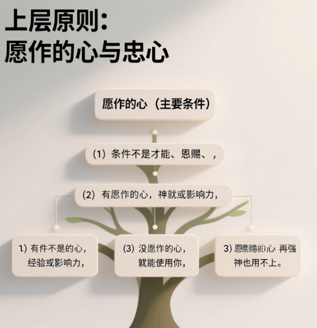

🎯 主題與結論
1.2 核心結論與適用範圍 +
📖 背景摘要與情境重建
2.1 寫作背景分析 +
2.2 目標聽眾與核心挑戰 +
⚖️ 事奉觀的對比分析
為了凸顯講道所要傳達的核心價值轉變，本節透過表格形式，清晰地對比了世俗價值觀與聖經教導中，關於「服事」的兩種截然不同的視角。
您好，作為您的專業助手，我將根據您提供的來源內容，整理出一個表格和一個心智圖架構，以說明服侍中的關鍵概念和原則。
📊 服侍的關鍵概念與原則
本來源主要透過先知以利亞被烏鴉和寡婦供應的故事，強調上帝使用平凡人（Ordinary People）服侍的原則，以及擁有願作的心（Willing Heart）的重要性。
一、表格：以利亞的特殊團隊與服侍原則 +
以下表格比較了以利亞兩階段的供應者（烏鴉和寡婦）的特點、地位轉變，以及從中引出的服侍原則：
| 項目 | 烏鴉 (Raven) | 寡婦 (Widow) | 服侍原則/上帝的作為 |
|---|---|---|---|
| 原始地位 | 雜食性鳥類，照本性是肉食者/消費者 | 西頓撒勒法的外邦人，一級貧戶，快要餓死 | 神使用平凡人，而非僅是精英分子 |
| 服侍內容 | 早晚一次叼肉叼餅給先知吃 | 以僅有的一點點麵和油，為先知和兒子做餅 | 小事要忠心 (比大師更難，因無掌聲)；做例行公事需要忠心 |
| 地位轉變 | 從消費者變成供應者 (Deliverer) | 從被救濟的對象變成供應者 (Supplier) | 地位的轉變：從被牧養者轉變為牧養人 |
| 服侍條件 | 執行神的命令 | 照以利亞的話去行，有願作的心 | 願作的心比才能、恩賜、經驗更重要 |
| 上帝支持 | 餅和肉是天使預備的 | 讓罈內麵不減少，瓶內油不缺 | 神會跟你同工；神會照你所有有限的條件加碼擴張；團隊互補 |
二、心智圖架構：服侍與被神使用的原則 +

🔍 核心論點深度解析
4.1 引言：解構神國的服事法則 +
4.2 論點一：神非傳統的團隊組合——烏鴉與寡婦的啟示 +
4.3 論點二：服事的核心前提——願作的心 +
4.4 論點三：服事帶來的身分轉變——從受助者到供應者 +
✨ 結論：你的重要性與最終鼓勵
5.1 接納你的重要性 +
5.2 最後的呼召 +
🙏 祈禱
親愛的天父，我們這些蒙恩的兒女，此刻滿懷敬畏與感恩，一同來到祢慈愛的施恩寶座前。
我們深知祢是那位鑒察人心的主，洞悉我們內心最深處的渴望與掙扎，
就如同清晨甘露滋潤大地，祢那豐盛恩典也時刻澆灌著我們的生命，使我們得以更新。
在這一刻，我們特別為祢所寶貝的孩子獻上這份從心底深處湧流而出的真誠代禱。
主啊，我們懇切為祢這位寶貴的孩子禱告，祈求祢能在他心中點燃並堅定一顆甘心樂意、積極進取的服事心志。
天父，祢比我們更深知人性的軟弱，生命中時常會遭遇那如迷霧般籠罩的自我懷疑，
懼怕那未知且充滿挑戰的道路，又或是因深感自身能力不足而滋生的猶豫、膽怯和不配感。
我們承認，這些感受有時就像沈重的鎖鏈，緊緊捆綁著我們自由回應祢呼召的腳步，讓我們遲疑不前。
然而，親愛的主，我們緊抓住祢在腓立比書2章13節所應許的：「因為你們立志行事，都是神在你們心裡運行，為要成就他的美意。」
何等寶貴的應許！在祢的應許中，我們深知祢永不撇下我們。
因此，我們懇求祢以聖靈的大能，在孩子心中運行，激發那份屬天的熱情與渴望，驅散一切攔阻的黑暗，
讓他的心如活泉般活潑湧動，以一顆全然感恩的心，時刻預備好自己，
勇敢地承擔祢所託付的任何事工，無論大小，皆能為主所用，榮耀祢的聖名。
親愛的主，我們也特別為孩子在日常生活中，特別是在那些看似微不足道、重複乏味，甚至無人問津的服事崗位上，能操練並彰顯出絕對的忠心來懇求。
我們深知這並不容易，世人的目光常常追逐那些光鮮亮麗、引人注目的成就，
然而祢的眼光卻是穿越表象、洞察內心的真實。
如同羅馬書12章11節所教導的：「殷勤不可懶惰；要心裡火熱，常常服事主。」
主啊，祢一再提醒我們，服事的真正價值在於內心的火熱與對祢的忠誠。
求祢幫助孩子超越人眼中的價值判斷，將每一份服事都視為對祢真誠的敬拜，單單為了討祢的喜悅而盡忠職守。
願他能以僕人服事主人的心態，不計較眼前的報酬，不追求個人的顯揚，
只願將一切的榮耀全然歸於祢的聖名，讓他的生命如同靜默而深邃的河流，
雖不喧嘩，卻持續不斷地滋養著週遭的一切生命，帶來潛移默化的影響。
父啊，我們何等需要祢的幫助，學習徹底放下對自身有限才能、經驗和資源的依賴與驕傲。
我們承認，有時我們的信心像在風中搖曳的蘆葦，常會健忘，忘記了祢是何等浩大、超越一切、全然掌權的神。
因此，我們懇求祢，賜予孩子如同孩童般單純、全心的信靠，
如同詩篇127篇1節所說：「若不是耶和華建造房屋，建造的人就枉然勞力。」
是的，主，我們深知若非祢動工，我們一切的努力都將是徒然無益。
願他能深刻體認到，只有祢無限的大能、智慧和豐盛的供應，
才是我們生命中唯一穩固且永不動搖的磐石。
在每一個服事環節中，願他都能先尋求祢的面，藉著禱告將一切重擔、疑慮、不足都全然卸給祢。
主啊，我們深知，我們的軟弱正是祢能力得以完全彰顯的時刻，
願孩子在這份全然的倚靠中，經歷前所未有的自由與從祢而來的力量。
當孩子在服事中遭遇挫折、面對失敗，或感到力不不從心之時，天父啊，求祢賜下超乎尋常的智慧，使他能以屬天的眼光洞察其中的學習與成長機會。
我們深知，祢的法則與世界截然不同，祢有時容許我們經歷試煉，為的是要煉淨我們，使我們更加成熟堅韌，更像祢的樣式。
如同希伯來書12章11節所言：「凡管教的事，當時不覺得快樂，反覺得愁苦；後來卻為那經練過的人結出平安的果子，就是義。」
主啊，即使在愁苦與淚水中，我們依然堅信祢的美意與恩典。
願祢那堅韌不拔的毅力充滿孩子的心，使他永不灰心氣餒。
反而，願他能從每一次的跌倒中重新站立，更加緊密地倚靠祢，更深地認識祢，
並在逆境的淬煉中，結出更成熟、更豐盛的生命品格，
如同經過烈火提煉的精金，越發閃耀著祢榮耀的光芒。
最後，我們將我們的眼光從個人延伸到群體，懇切為孩子所屬的教會群體禱告。
主啊，祢是教會的元首，是我們一切的根基與盼望。
求祢在我們當中興起更多渴慕服事、願意單純擺上，且恩賜彼此配搭、相愛的弟兄姊妹。
願我們在基督的愛中緊密聯結，同心合意，效法基督捨己的榜樣，一同建造祢的國度。
如同以弗所書2章19至22節所描繪的，我們不再是外人或客旅，而是神家裡的人，靠著基督這塊穩固的房角石，各房聯絡得合式，漸漸成為主的聖殿，成為神藉著聖靈居住的所在。
願我們這個屬靈的家園充滿了生命力，能夠真正地榮耀祢的聖名，
讓祢的旨意行在地上如同行在天上，讓更多人得以認識祢。
感謝主，祢是那永不打盹、時刻垂聽我們禱告的信實之神。
我們將這一切的祈求與深切的盼望都全然交託在祢大能的、慈愛的手中。
願祢的旨意成全，願祢的名得著一切永遠的榮耀。
奉我們主耶穌基督的聖名禱告，阿們！